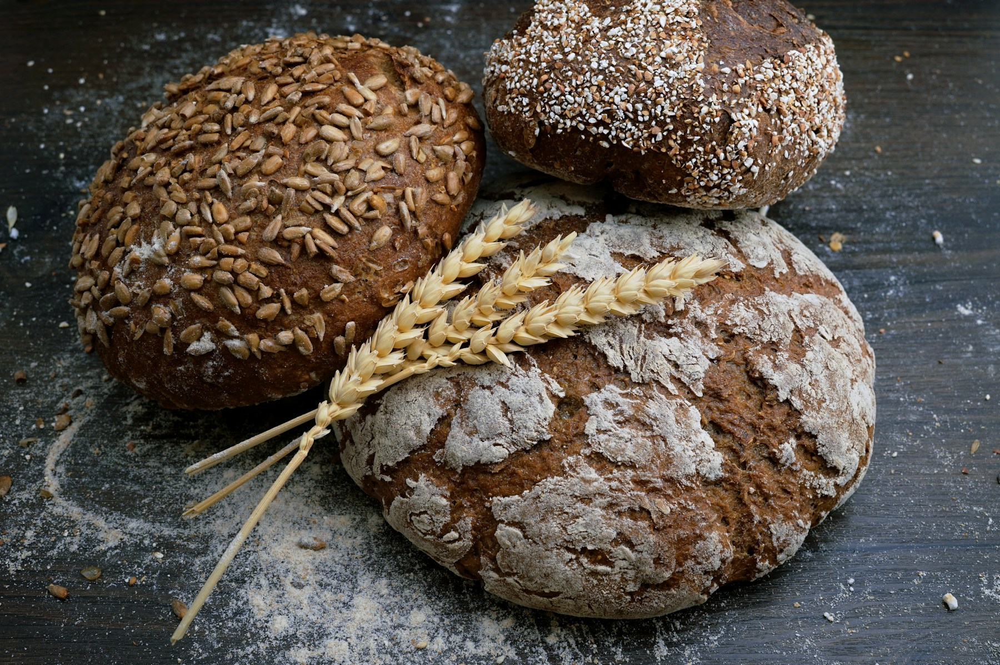

01 / BEFORE THE CITYFIRST OUT
The first loaves.
Flour, water, a little salt, and the patience of a long night. The first bread is ready while the street is still stretching awake.
A little flour, a lot of time
Small-batch sourdough, flaky pastries, and the kind of coffee that makes you stay a little longer.

Made slowly, shared daily.Wild yeast · Local grain · No shortcuts
Open Tue–Sun, 7:00 until sold out
One oven · four little rituals
First loaves are on their way.
Flour, water, a little salt, and the patience of a long night. The first bread is ready while the street is still stretching awake.

Layers unfurl at the edge of the oven. The pastry case fills, the coffee starts pouring, and the morning gets a little softer.

The counter turns toward lunch: warm savouries, good coffee, and a few more slices to share around the table.

The last round is for supper: a few loaves, something sweet, and the lovely smell that follows you down the block.
The daily favourites
A note from the bakehouse
We believe the best ingredients are patience, good flour, and people who care about the small things. Come find out what that tastes like.
A little about us →Notes from the kitchen
A little about fermentation, flavour, and not rushing the good part.
Butter temperature is a mood. Here's how we keep it happy.
Meet the faces who turn our early mornings into yours.
For the long table
Planning brunch, a birthday, or simply tomorrow's breakfast? Tell us what you'd like and we'll get back to you.